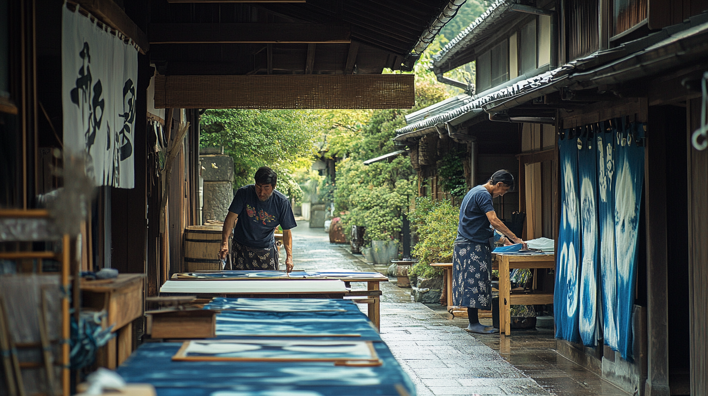
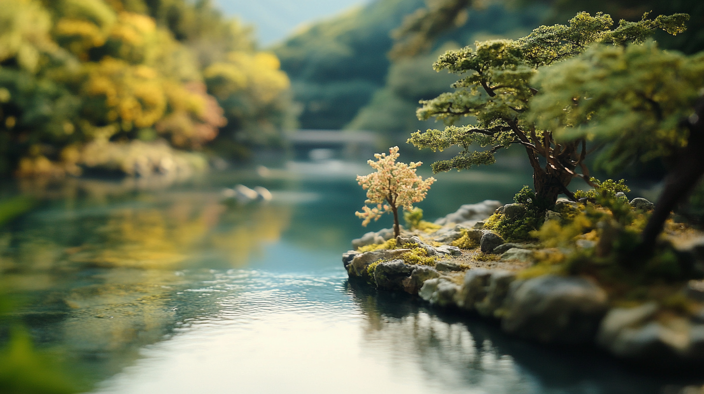
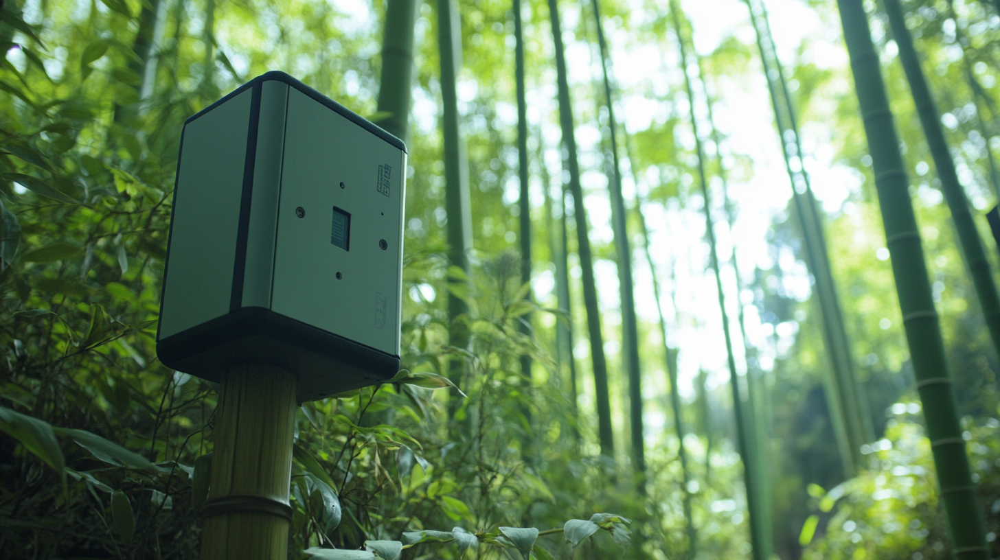
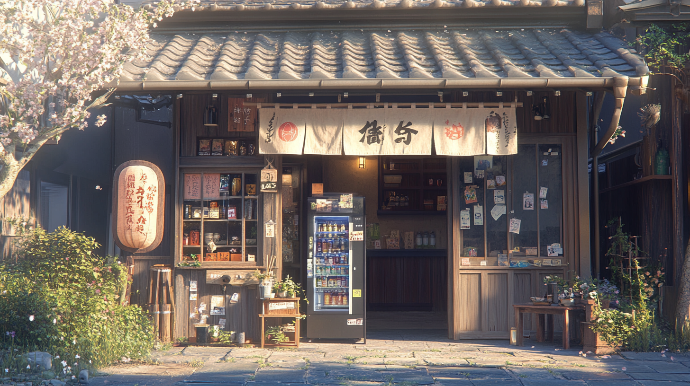
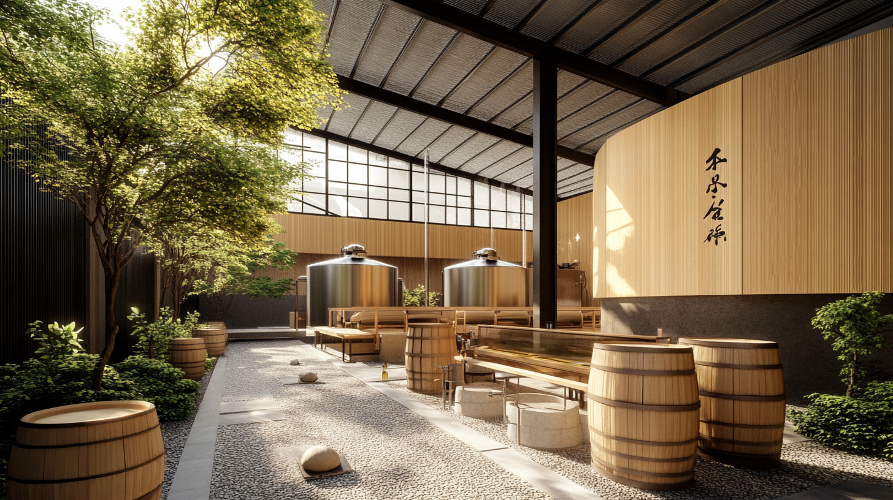

1. Hikari Machiya Studio
Step into the world of traditional Japanese crafts at Hikari Machiya Studio. Here, visitors can participate in workshops that revive ancient techniques such as indigo dyeing and handmade washi paper production. Nestled in Kyoto's historic district, the studio offers a hands-on experience for those eager to connect with Japan's rich cultural heritage.
2. Akari no Michi
Akari no Michi transforms Kyoto's streets with its stunning solar-powered lanterns. Designed by local artists, these eco-friendly installations illuminate pathways with a warm, sustainable glow, blending beauty and innovation. Walk through Kyoto at night and discover how tradition and technology meet to create magic.
3. Katzura Eco-Island Center
Discover the ecological wonders of the Katzura Eco-Island Center, where miniature ecosystems thrive along the riverbanks of Kyoto. This initiative fosters biodiversity and environmental awareness, offering visitors a serene escape while learning about the importance of sustainable practices in preserving natural habitats.
Read More4. Bamboo Grove Knowledge Trail
Explore the iconic bamboo forests of Kyoto like never before with the Bamboo Grove Knowledge Trail. This smart forest integrates IoT technology to monitor carbon capture and soil health, showcasing how innovation can coexist with natural beauty. Visitors can enjoy guided walks while learning about Kyoto's commitment to a sustainable future.
Read More5. Kura no Megumi
Experience the art of traditional sake brewing at Kura no Megumi, where solar energy powers the entire process. This brewery preserves the ancient craft of sake-making and embraces renewable energy to create a truly sustainable and delicious product. A must-visit for sake enthusiasts!
Read More6. Midori no Kura
Midori no Kura redefines sustainable innovation by turning sake fermentation waste into bioenergy. This cutting-edge initiative is a model for circular economy practices, blending tradition with a forward-thinking approach. Visitors can tour the facilities and witness how waste becomes a power source.
Read More